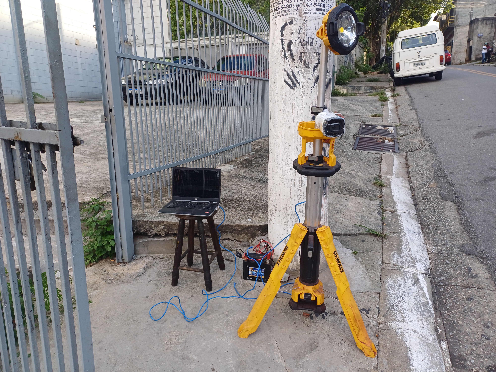
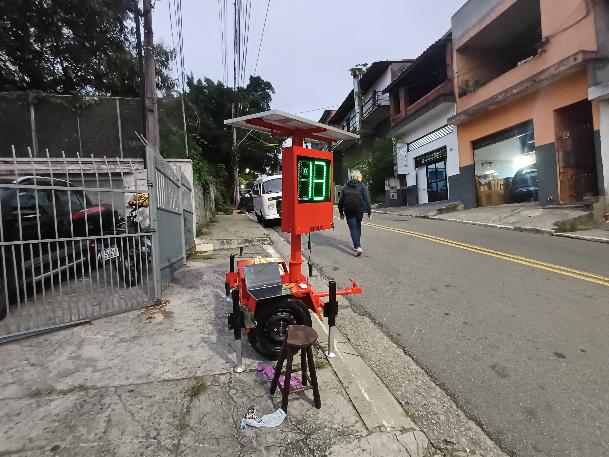
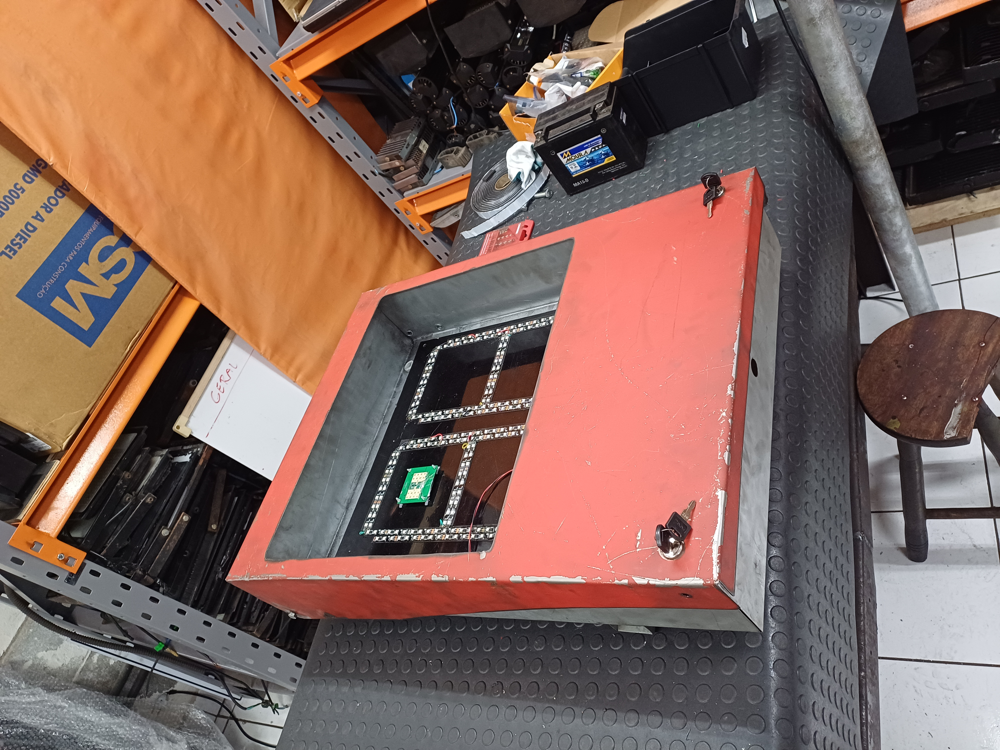

Sistema inteligente de detecção de velocidade utilizando Visão Computacional (OpenCV) e Radar de Micro-ondas para monitoramento de tráfego em tempo real.
Este projeto desenvolve um sistema capaz de rastrear, identificar e registrar a velocidade de veículos, além de capturar imagens utilizando Visão Computacional.
V1: Operação em computador embarcado com processamento de imagem contínuo.
V2: Integração com sensor de radar micro-ondas para medição de alta precisão.
serial.Serial("COMX", 9600, timeout=0.5)
Suporte a resoluções HD e Full HD via arquivo ou câmera real-time.
Atribuição de ID único por veículo com detecção de Bounding Boxes e ROI.
Registro automático de fotos com foco na placa para veículos acima do limite.
# Dados enviados via serial para monitoramento externo
Registros reais capturados pelo sistema


